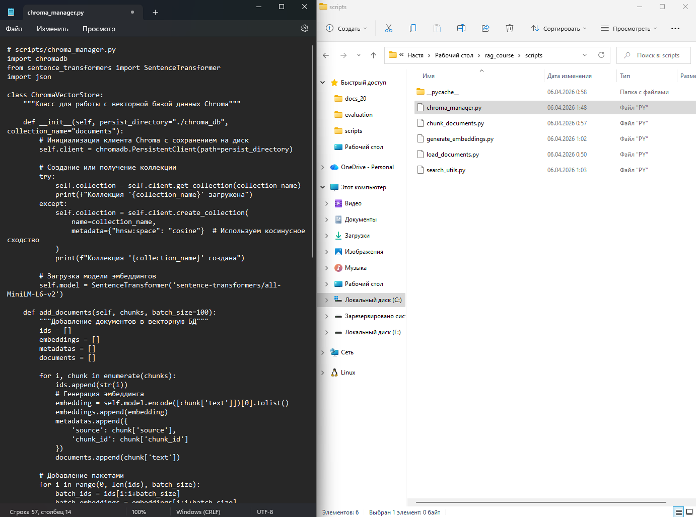
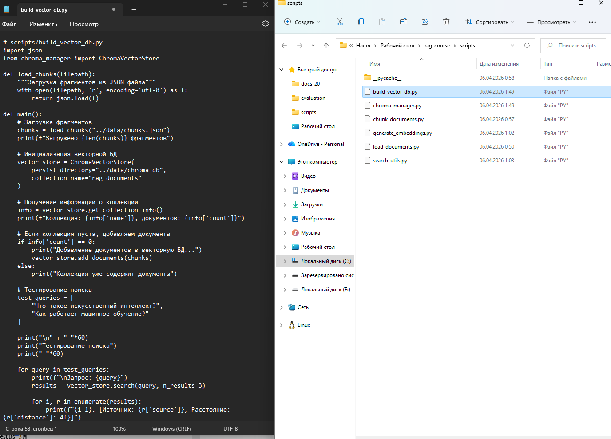
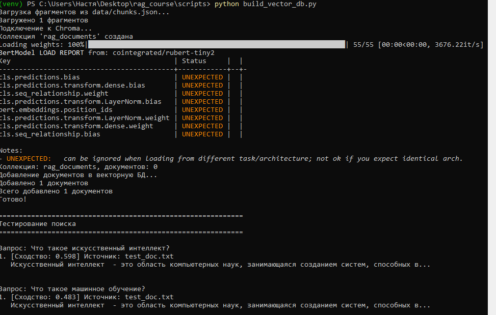
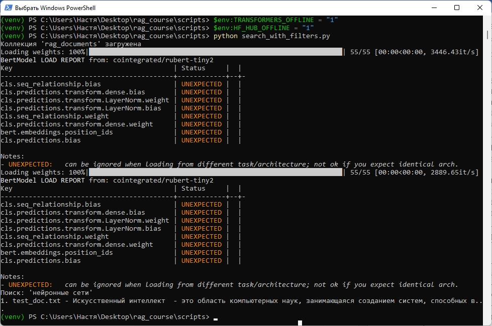

Методическое пособие №3. Векторная база данных
Цель занятия
Освоить создание, наполнение и использование векторной базы данных для эффективного хранения и поиска эмбеддингов
Продолжительность: 4 академических часа
Пошаговая инструкция
Теоретическое введение
Векторная база данных - это специализированная система для хранения векторных представлений и быстрого поиска по сходству. В отличие от хранения в файлах (как в предыдущей работе), векторная БД:
- Оптимизирована для поиска ближайших соседей
- Поддерживает добавление/удаление документов
- Может фильтровать по метаданным
- Обеспечивает персистентное хранение
Chroma - это лёгкая встраиваемая векторная БД на Python, идеально подходящая для обучения и небольших проектов.
cd C:\Users\%USERNAME%\Desktop\rag_course
.\venv\Scripts\activate
pip install chromadbСоздайте файл scripts/chroma_manager.py.

# scripts/chroma_manager.py
import os
import chromadb
from sentence_transformers import SentenceTransformer
import json
# Отключаем интернет-проверки для модели
os.environ["TRANSFORMERS_OFFLINE"] = "1"
os.environ["HF_HUB_OFFLINE"] = "1"Подключаются необходимые библиотеки и отключаются попытки модели обращаться в интернет, чтобы она работала из локального кэша.
class ChromaVectorStore:
"""Класс для работы с векторной базой данных Chroma"""
def __init__(self, persist_directory="./chroma_db", collection_name="documents"):
# Инициализация клиента Chroma с сохранением на диск
self.client = chromadb.PersistentClient(path=persist_directory)
# Создание или получение коллекции
try:
self.collection = self.client.get_collection(collection_name)
print(f"Коллекция '{collection_name}' загружена")
except:
self.collection = self.client.create_collection(
name=collection_name,
metadata={"hnsw:space": "cosine"}
)
print(f"Коллекция '{collection_name}' создана")
# Загрузка русскоязычной модели из локального кэша
local_model_path = "C:\\Users\\%USERNAME%\\.cache\\huggingface\\hub\\models--cointegrated--rubert-tiny2\\snapshots\\e8ed3b0c8bbf4fb6984c3de043bf7d2f4e5969ae"
print(f"Загрузка модели из: {local_model_path}")
self.model = SentenceTransformer(local_model_path)Создаётся класс для работы с Chroma, при инициализации подключается к базе данных, создаёт или загружает коллекцию и загружает русскоязычную модель эмбеддингов из локальной папки.
def add_documents(self, chunks, batch_size=100):
"""Добавление документов в векторную БД"""
ids = []
embeddings = []
metadatas = []
documents = []
for i, chunk in enumerate(chunks):
ids.append(str(i))
# Генерация эмбеддинга
embedding = self.model.encode([chunk['text']])[0].tolist()
embeddings.append(embedding)
metadatas.append({
'source': chunk['source'],
'chunk_id': chunk['chunk_id']
})
documents.append(chunk['text'])
# Добавление пакетами
for i in range(0, len(ids), batch_size):
batch_ids = ids[i:i+batch_size]
batch_embeddings = embeddings[i:i+batch_size]
batch_metadatas = metadatas[i:i+batch_size]
batch_documents = documents[i:i+batch_size]
self.collection.add(
ids=batch_ids,
embeddings=batch_embeddings,
metadatas=batch_metadatas,
documents=batch_documents
)
print(f"Добавлено {len(batch_ids)} документов")
print(f"Всего добавлено {len(ids)} документов")Метод преобразует текст каждого фрагмента в эмбеддинг и добавляет его вместе с метаданными в векторную базу данных, разбивая на пакеты для оптимизации.
def search(self, query, n_results=5, where_filter=None):
"""Поиск по запросу с опциональной фильтрацией"""
query_embedding = self.model.encode([query])[0].tolist()
results = self.collection.query(
query_embeddings=[query_embedding],
n_results=n_results,
where=where_filter
)
formatted_results = []
if results['documents'][0]:
for i in range(len(results['documents'][0])):
formatted_results.append({
'text': results['documents'][0][i],
'source': results['metadatas'][0][i]['source'],
'chunk_id': results['metadatas'][0][i].get('chunk_id', i),
'distance': results['distances'][0][i]
})
return formatted_resultsМетод преобразует поисковый запрос в эмбеддинг, выполняет поиск в Chroma по косинусному сходству и возвращает отформатированный список результатов с указанием расстояния (близости).
def get_collection_info(self):
"""Информация о коллекции"""
return {
'name': self.collection.name,
'count': self.collection.count(),
'metadata': self.collection.metadata
}
def delete_collection(self):
"""Удаление коллекции"""
self.client.delete_collection(self.collection.name)
print(f"Коллекция '{self.collection.name}' удалена")
def list_collections(self):
"""Список всех коллекций"""
return [col.name for col in self.client.list_collections()]Вспомогательные методы для получения информации о коллекции, удаления коллекции и списка всех коллекций.
Создайте файл scripts/build_vector_db.py.

# scripts/build_vector_db.py
import os
import json
from chroma_manager import ChromaVectorStore
# Отключаем интернет-проверки
os.environ["TRANSFORMERS_OFFLINE"] = "1"
os.environ["HF_HUB_OFFLINE"] = "1"
def build_database():
"""Создание и наполнение векторной БД"""
# Загрузка фрагментов из JSON
with open("../data/chunks.json", 'r', encoding='utf-8') as f:
chunks = json.load(f)
print(f"Загружено {len(chunks)} фрагментов")
# Инициализация векторной БД
vector_store = ChromaVectorStore(
persist_directory="../data/chroma_db",
collection_name="rag_documents"
)
# Добавление документов
vector_store.add_documents(chunks)
# Информация о коллекции
info = vector_store.get_collection_info()
print(f"\nКоллекция '{info['name']}' содержит {info['count']} документов")
return vector_store
if __name__ == "__main__":
build_database()Скрипт загружает фрагменты из JSON, создаёт векторную БД и добавляет все документы.
Создайте файл scripts/test_russian_search.py.

# scripts/test_russian_search.py
import os
from chroma_manager import ChromaVectorStore
# Отключаем интернет-проверки
os.environ["TRANSFORMERS_OFFLINE"] = "1"
os.environ["HF_HUB_OFFLINE"] = "1"
def test_russian_search():
"""Тестирование семантического поиска на русских запросах"""
# Инициализация векторной БД
vector_store = ChromaVectorStore(
persist_directory="../data/chroma_db",
collection_name="rag_documents"
)Создаётся функция test_russian_search(), внутри неё подключается векторная база данных.
# Русские запросы
test_queries = [
"Что такое искусственный интеллект?",
"Чем отличается машинное обучение от обычного программирования?",
"Как работают нейронные сети?"
]
print("Тестирование семантического поиска на русском языке")
print("=" * 60)Определяется список из трёх русскоязычных поисковых запросов и выводится заголовок тестирования.
for query in test_queries:
print(f"\nЗапрос: {query}")
# Поиск
results = vector_store.search(query, n_results=3)
if not results:
print(" Результатов не найдено")
else:
for i, r in enumerate(results):
similarity = 1 - r['distance']
print(f"{i+1}. [Сходство: {similarity:.3f}] Источник: {r['source']}")
print(f" {r['text'][:100]}...")
print("-" * 40)
if __name__ == "__main__":
test_russian_search()Для каждого запроса выполняется поиск в векторной БД, из расстояния вычисляется сходство, и выводятся топ-3 результата с указанием источника и фрагмента текста.

cd scripts
python build_vector_db.py
python test_russian_search.pyСоздайте файл scripts/search_with_filters.py. Импортируйте библиотеки:
# scripts/search_with_filters.py
from chroma_manager import ChromaVectorStore
from sentence_transformers import SentenceTransformerИмпортируются класс для работы с векторной БД и библиотека для работы с моделями эмбеддингов.
def main():
# Инициализация
vector_store = ChromaVectorStore(
persist_directory="../data/chroma_db",
collection_name="rag_documents"
)
# Русская модель
model = SentenceTransformer('cointegrated/rubert-tiny2')Создаётся функция main(), внутри неё подключается векторная база данных и загружается русскоязычная модель эмбеддингов.
# Поиск без фильтра
query = "нейронные сети"
print(f"Поиск: '{query}' (без фильтра)")
query_embedding = model.encode([query]).tolist()
results = vector_store.collection.query(
query_embeddings=query_embedding,
n_results=3
)
if results['documents'][0]:
for i, doc in enumerate(results['documents'][0]):
print(f"{i+1}. {results['metadatas'][0][i]['source']} - {doc[:100]}...")
else:
print(" Результатов не найдено")
if __name__ == "__main__":
main()Задаётся поисковый запрос, преобразуется в эмбеддинг и выполняется поиск в коллекции Chroma, возвращающий 3 наиболее релевантных результата.
$env:TRANSFORMERS_OFFLINE = "1"
$env:HF_HUB_OFFLINE = "1"
python search_with_filters.pyЗадание для самостоятельного выполнения
- Добавьте в класс ChromaVectorStore метод для удаления конкретного документа по ID.
- Реализуйте функцию обновления существующих документов (удаление старых и добавление новых).
- Сравните время поиска в Chroma с предыдущим методом (полный перебор по файлу). Сделайте замеры для 10 запросов.
- Добавьте в метаданные дополнительные поля (например, дату добавления, категорию) и реализуйте фильтрацию по ним.
Контрольные вопросы
- Чем векторная база данных отличается от простого хранения векторов в файле?
- Какой алгоритм поиска используется в Chroma по умолчанию?
- Для чего нужны метаданные при работе с векторной БД?
- Что такое persistent directory и зачем он нужен?
- Как выполнить поиск с фильтрацией по источнику документа?
Критерии оценки
| Критерий | Баллы |
|---|---|
| Успешное создание коллекции в Chroma | 2 |
| Добавление документов в векторную БД | 2 |
| Реализация поиска с возвратом результатов | 2 |
| Реализация поиска с фильтрацией | 2 |
| Выполнено дополнительное задание | 2 |
Максимальный балл: 10